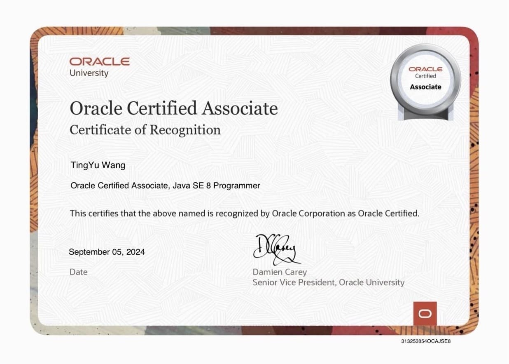
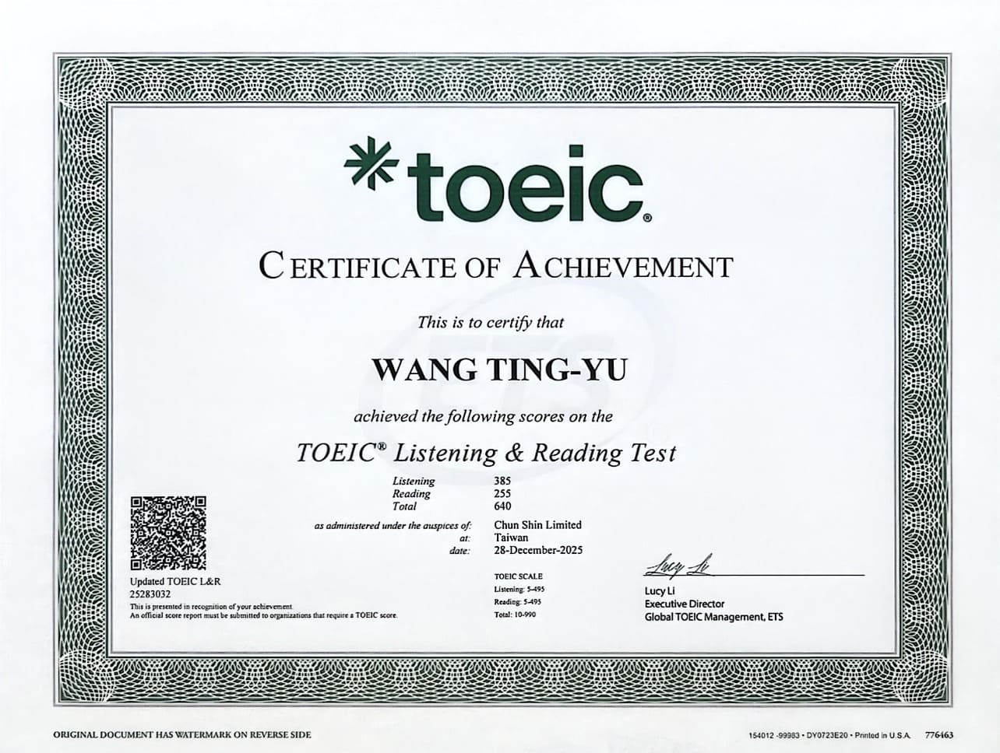
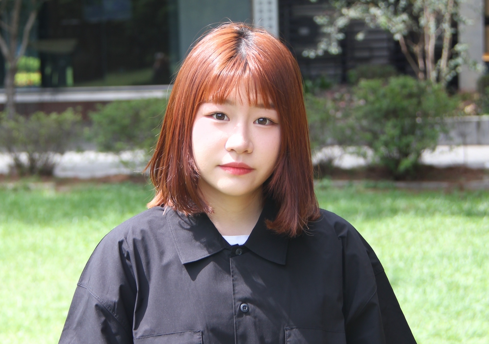
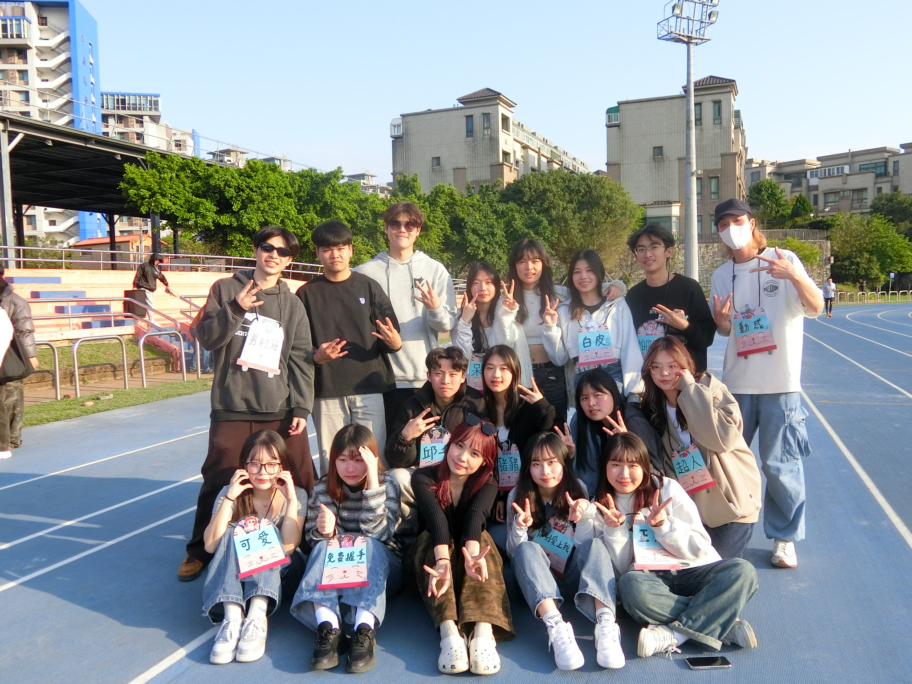
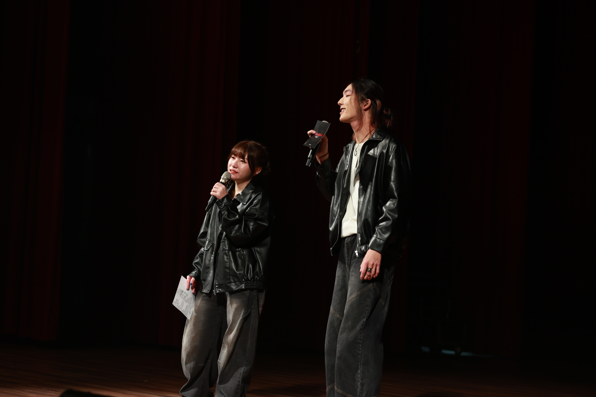

心理專業
臨床與變態心理
心理學方法
心理學概論
程式技能
Java
Python
Html
Css
JavaScript
專業證照
Microsoft Certified: Azure AI Fundamentals

JAVA SE 8 Programmer (1Zo-808)

多益TOEIC 640分
經歷
心理系系學會-公關長
在擔任系學會公關的期間，我學到了如何與外部廠商溝通協調，從詢價到洽談合作，每一步都需要細心與耐心。 此外，也體會到如何在社群平台上撰寫貼文文案、設計活動宣傳圖，並確保訊息能夠準確的傳達給同學，讓大家能即時掌握最新的資訊。 這些經驗讓我學到如何用最貼近的方式推廣活動，也讓我對團隊合作有了更深的認識。 公關這份職位讓我學到的不只是技能，更是責任感與應變能力。

大運動會-活動組組長
當時擔任三系聯合運動會的活動組組長，主要負責與其中兩系的活動組長夥伴溝通與協調，一起帶領三系的學弟妹們順利完成活動。 透過這次的大運動會讓大家除了比賽之外,也更加凝聚彼此的感情,讓整個活動變得特別有意義,也希望每個參與活動的人,都能從中找到自己的回憶與成就感。 這次第一次擔任活動組組長,能夠帶領學弟妹們一起籌備整個大運,是一個很寶貴的經驗。看著他們從一開始的放不開,到後來都變得很有自信,我感到很欣慰。

心理之夜-活動組組長
心理之夜是我們心理系專門提供給系上同學表演機會的活動，而我是擔任其中主辦人員之一的活動組組長。 我主要負責的工作是領導活動組組員及活動主持，因為第一次擔任主持人，在過程中我學到更多如何臨場反應或隨機應變的能力，以及展現幽默且讓人自在的說話方式。 另外我也更加熟練的安排練習上的規劃及與組員間的溝通協調，期望能將這份專業的領導能力，靈活的運用在未來的職場上。
